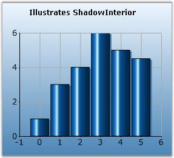

Specifies the interior color of the shadow.
|
Details | |
|
Possible Values |
Any valid Color format |
|
Default Value |
Black |
|
2D / 3D Limitations |
2D only |
|
Applies to Chart Element |
Any Series |
|
Applies to Chart Types |
Column Charts, Bubble Chart, Line Charts, BarCharts, Candle Chart, Kagi Chart, Point and Figure Chart, Renko Chart, Three Line Break Chart, Box and Whisker Chart, Gantt Chart, Histogram Chart, Tornado Chart, Pie Chart, Polar and Radar Chart, Area Chart, Step Area Chart |
Here is sample code snippet using ShadowInterior in Column Chart.
Series Wide Setting
|
[C#]
// Specifying Shadow Interior for 2 series this.chartControl1.Series[0].Style.DisplayShadow = true; this.chartControl1.Series[0].Style.ShadowInterior = new BrushInfo(GradientStyle.None, Color.SteelBlue,Color.SteelBlue); |
|
[VB.NET]
' Specifying Shadow Interior for 2 series Private Me.chartControl1.Series(0).Style.DisplayShadow = True Private Me.chartControl1.Series(0).Style.ShadowInterior = New BrushInfo(GradientStyle.None, Color.SteelBlue,Color.SteelBlue) |

Figure 195: ColumnChart with SkyBlue Shadow
Specific Data Point Setting
To specify different shadow colors for individual points, use Series.Styles[0].ShadowInterior property.
|
[C#]
this.chartControl1.Series[0].Styles[0].ShadowInterior = new BrushInfo(GradientStyle.None, Color.SteelBlue,Color.SteelBlue); this.chartControl1.Series[0].Styles[0].ShadowInterior = new BrushInfo(GradientStyle.None, Color.Gray,Color.Gray); |
|
[VB.NET]
Private Me.chartControl1.Series(0).Style.ShadowInterior = New BrushInfo(GradientStyle.None, Color.SteelBlue,Color.SteelBlue) Private Me.chartControl1.Series(0).Style.ShadowInterior = New BrushInfo(GradientStyle.None, Color.Gray,Color.Gray) |
See Also
Column Charts, Bar Charts, Line Charts, Candle Chart, Kagi Chart, BoxandWhisker chart, Histogram chart, Polar and Radar Chart,Point and Figure Chart, Renko Chart, Three Line Break Chart, Gantt Chart, Tornado Chart, Pie Chart, Area Chart, Step Area Chart